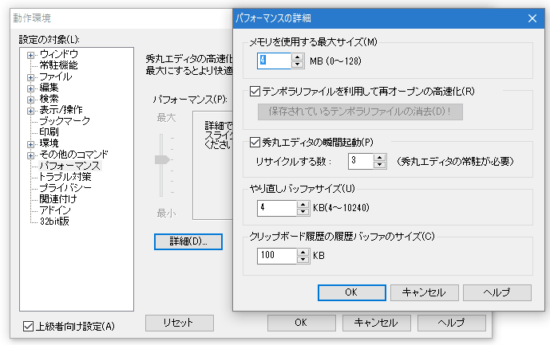

- Windowsでタスクマネージャを表示すると、リストボックスに「Hidemaru.exe」が一杯出てくるのですが、異常でしょうか。

異常ではありません。「秀丸エディタの常駐」および「秀丸エディタの瞬間起動」を利用するように設定されていると、 秀丸エディタを閉じても、実際にはウィンドウを廃棄せずに（メモリ上に残したまま）瞬間起動用に待機させることになります。 リストボックスに一杯出てくる「Hidemaru.exe」は、待機中の秀丸エディタです。
「秀丸エディタの瞬間起動」を利用するには、「秀丸エディタの常駐」を設定する必要があります。 （「その他」→「動作環境」→「常駐機能」→「秀丸エディタの常駐」で設定）

「秀丸エディタの瞬間起動」は「動作環境」→「パフォーマンス」→「詳細」ボタンで表示されるダイアログで、 設定を行います。